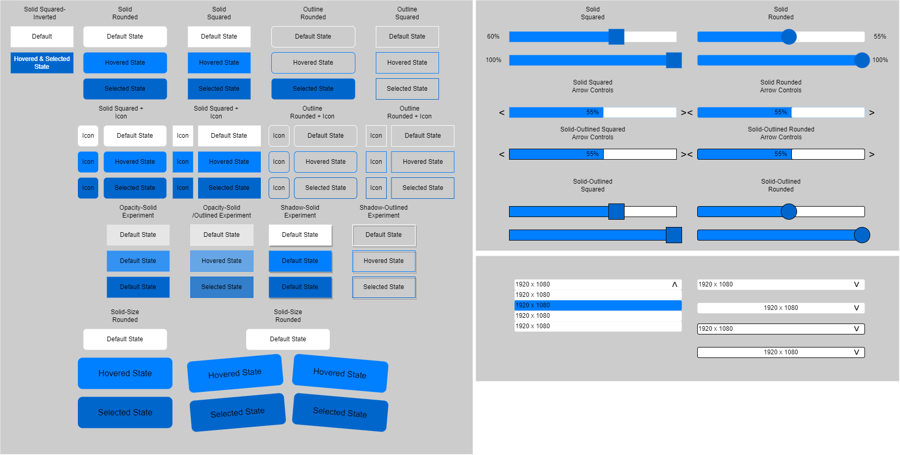
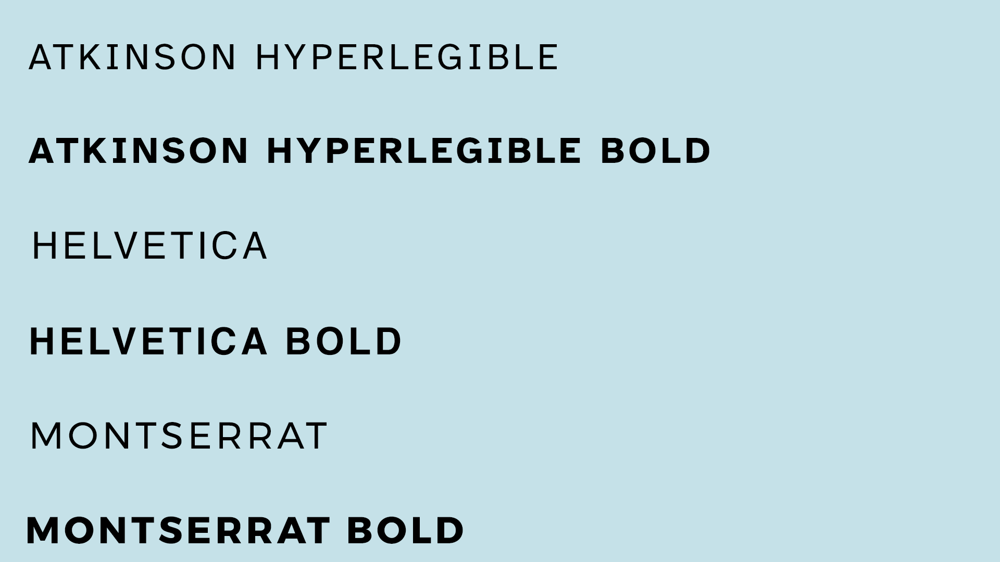
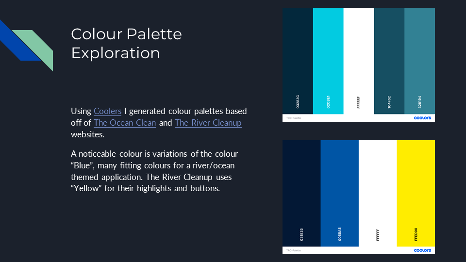

The River Clean-up
Project Aim
The aim of my research project is to investigate how the user experience and user interface can be improved for young people in education (11-16).
Research Questions
- How can the User Experience/User Interface be improved for younger audiences?
- How can the User Experiences/User Interface aid in effective education?
- Explore User Experience/User Interface Design for young people in education.
- How can Environmental theming be implemented into a User Interface?
- What makes a good User Experience/User Interface?
Aims and Objectives
- Literature Review - Undertake UX/UI research to help inform me of good/bad UX/UI design. What the current trends are and how to onboard, balance cognitive load and how to keep users motivated/engaged to achieve their goals.
- Practical Development - Following on from research, I can develop low-fidelity Adobe XD wireframes, high-fidelity Adobe XD wireframes and implement into unity engine.
- Game Analysis - Undertake game analysis to develop an understanding of pre-existing game/apps user flows and user interfaces.
- Iterative Design - Using the iterative design process to conceptualize, prototype, test and evaluate my project.
- Post-Mortem - Conduct a post-mortem on my work from start to finish covering all the above objectives.
Critical Game Analysis

Key Takeaways
- Navigation
- Consistency
- Clarity
- Accessibility
I measured the navigation from "Point A" to "Point B", throughout many of the cases the objective was; Navigate from the Main Menu to the "Game Scene". The majority of the cases did this well, requiring minimal clicks, some taking further steps such as Minecraft, a subjectively convoluted menu system requiring far too many menu navigations to get into a game.
Most cases had consitant visual language with repest to their own game. Minecraft, however, had inconsistencies spread throughout its UI, some icon elements being 2D and some being 3D.
All test cases had good clarity, through the use of either Typography or Iconography, they got the message across.
Acessibility is where the majority of the cases struggle, some do however include forms of accessible options but there is still much to improve in this area.
Sketches

User Flow Charts
User Persona's
Wireframe Prototypes
Please click this link to open the wireframe in a new window.
UI Design Element Exploration
Based on my earlier critical game analysis, I developed multiple low-fidelity buttons, sliders and dropdowns
Typography Exploration
With a focus on Accessibility I discovered the Atkinson Hyperlegible Font, a free to use font created for people who expeirence low vision impairments.
Colour Exploration
Using both The Ocean Cleanup and The River Cleanup I used Coolers to create colour palettes based on their website colours. Selecting the key colours that define each webpage.